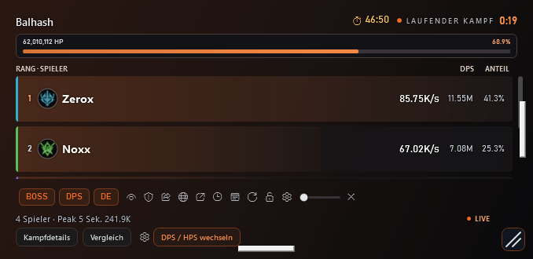
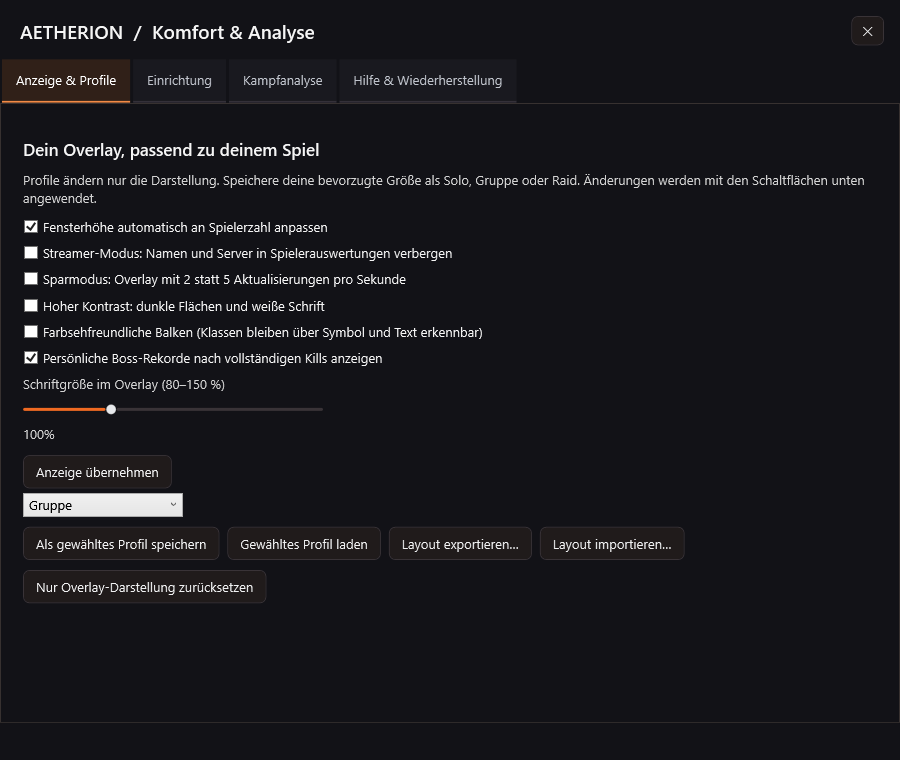

Mehr Komfort für deine Kämpfe.
Ein kompakteres Meter, persönliche Layouts und verständlichere Auswertungen. Dazu kommen Hilfen für Einrichtung, Support und Updates. In v0.3.49 ist das Teilen von DPS-Ergebnissen auf die Discord-Tabelle ausgerichtet; die AION2-Chatformate sind entfernt.


NEU · 01
Teilen über Discord
- DPS-Ergebnisse für Discord kopieren: In Overlay, Spieler-Kontextmenü und Detailauswertung bleibt die formatierte Gruppentabelle für Discord verfügbar.
- Die Einzelspieler- und Gruppen-Kurzformate für den AION2-Ingame-Chat wurden entfernt. Schaltflächen, Hinweise und Kopierbestätigung nennen jetzt ausdrücklich Discord – auf Deutsch, Englisch und Russisch.
- Die Tabelle wird in die Zwischenablage kopiert und von dir in Discord eingefügt. Die App veröffentlicht nichts automatisch in einem Discord-Kanal. Der Streamer-Modus gilt auch für die kopierten Spielernamen.
NEU · 02
Overlay und Layout-Profile
- Breiter, flacher und übersichtlicher: Das kompakte Overlay erhält kleinere Schrift, transparente Außenflächen und dunkle Spielerbalken. Bestehende Installationen übernehmen beim ersten Start mit dem neuen Layout die neuen Standardmaße; danach kannst du sie weiter anpassen.
- Automatische Fensterhöhe: Das Overlay passt sich der Spielerzahl an und wächst bis zur gewählten Maximalhöhe. Wenn du die Größe manuell ziehst, hat deine Änderung Vorrang und die Automatik wird ausgeschaltet.
- Solo-, Gruppen- und Raid-Profile speichern Position, Fenster- und Zeilengröße, Schriftgröße, Transparenz und Kontrast. Eigene Layouts lassen sich importieren und exportieren, ohne Konto- oder Lizenzdaten mitzugeben.
- Die Overlay-Darstellung lässt sich einzeln auf Standard zurücksetzen. Deine gespeicherten Profile bleiben dabei erhalten.
NEU · 03
Lesbarkeit, Datenschutz und Leistung
- Overlay-Schriftgröße von 80 bis 150 Prozent, hoher Kontrast und farbsehfreundliche Balken. Klassensymbole und Rangzahlen bleiben als zusätzliche Erkennungsmerkmale sichtbar.
- Streamer-Modus: Spielernamen und Server werden in Overlay, Raid-Ansicht, Auswertungen und kopierten Ergebnissen verborgen. Bereits geöffnete Auswertungen aktualisieren sich beim Umschalten. Lokal gespeicherte Original-Kämpfe werden nicht verändert.
- Sparmodus: Das Overlay aktualisiert sich zweimal statt fünfmal pro Sekunde; der pulsierende Statuspunkt wird deaktiviert. Die Verarbeitung der erfassten Kampfdaten bleibt vollständig aktiv.
NEU · 04
Rekorde und Kampfvergleiche
- Persönliche Boss-Rekorde nach vollständig erfassten Kills: Verglichen werden derselbe Charakter, dieselbe Klasse, derselbe Server, dieselbe Zone und derselbe Boss.
- Bekannt verspätete Einstiege, unbekannte maximale Boss-HP und deutlich eingeschränkte Gruppendaten zählen nicht als Rekord. Seit v0.3.48 wird auch der erste Rekordhinweis bei unbekannten maximalen Boss-HP unterdrückt.
- Der Kampfvergleich zeigt zusätzlich eigene DPS, kritische Treffer, Todesmeldungen, Sekunden mit empfangenem eigenen Schaden, die längste schadensfreie Folge und die Anteile der wichtigsten Skills.
- In Komfort & Analyse kannst du die letzten 200 gespeicherten Kämpfe durchsehen und einen Versuch mit dem vorherigen passenden Boss-Versuch vergleichen. Ausrüstung und Bossvarianten können weiterhin Unterschiede erklären.
NEU · 05
Todesanalyse und Aktivität
- Die Todesanalyse zeigt empfangene Treffer und Heilungen aus den letzten zehn Sekunden vor einer Todesmeldung. Das Ereignisfenster ist begrenzt, damit sein Speicherverbrauch nicht unbegrenzt wächst.
- Ältere Kampfdateien bleiben lesbar. Wenn ihnen die Treffer-Zeitleiste fehlt, zeigt die App das ausdrücklich an. Der zuletzt empfangene Treffer wird nicht automatisch als bewiesener Todesstoß gewertet.
- Aktivitätswerte zeigen Sekunden mit eigenen Schadensereignissen und längere Phasen ohne solche Ereignisse. Sie messen keine Tastatureingaben, tatsächlichen Unterbrechungen oder die korrekte Ausführung von Bossmechaniken.
NEU · 06
Einrichtung und Verbindung
- Neuer Bereich Komfort & Analyse: erreichbar über die Overlay-Werkzeugleiste und Einstellungen → Overlay. Die neue Werkzeugoberfläche ist zunächst deutsch; die bestehende Sprachwahl für Spielnamen und die übrige Oberfläche bleibt verfügbar.
- Der Einrichtungsassistent bietet Sprachauswahl, Solo-/Gruppen-/Raid-Layouts und eine Vorschau aus dem echten App-Renderer. Die Vorschau nutzt klar gekennzeichnete Beispieldaten und benötigt kein laufendes Spiel.
- Die Verbindungsprüfung liefert passende nächste Schritte: Spiel starten, Npcap und Adapter prüfen, auf Spielpakete warten oder die Erfassung neu starten. Kommen Pakete, aber keine Ereignisse an, weist sie auf eine mögliche Decoder-Anpassung nach einem Spiel-Update hin.
NEU · 07
Support und Wiederherstellung
- Support-Paket mit Inhaltsvorschau: Das lokale ZIP enthält einen technischen Diagnosebericht und die reine Layout-Konfiguration. Keine Namen, IP-Adressen, Konto- oder Lizenzdaten, Paketmitschnitte, Kampfdaten oder rohen Logs. Es wird nichts automatisch versendet.
- Vor künftigen Updates legt die App einen lokalen Checkpoint der laufenden ausführbaren Datei und ihrer Einstellungen an. Eine SHA-256-Prüfung erkennt veränderte Backup-Dateien.
- Unter Hilfe & Wiederherstellung kannst du zur gesicherten App-Version zurückkehren. Die App wird dabei geschlossen und anschließend neu gestartet. Scheitert der Austausch eines portablen Updates, versucht der Helfer, die gesicherte App-Datei wiederherzustellen.
- Der Rückweg steht erst nach einem Update zur Verfügung, das von v0.3.47 oder neuer gestartet wurde. Ein älterer Updater legt beim ersten Upgrade auf diese Versionen noch keinen Checkpoint an.
QUALITÄT
Geprüft vor dem Download
100 automatisierte Core- und App-Tests prüfen unter anderem Datenverarbeitung, Layout-Import, Namensschutz, automatische Fensterhöhe und Rekord-Abgrenzung. Die Discord-Menüauswahl wird in allen drei App-Sprachen geprüft. Der Release-Workflow führt die Tests vor der Erstellung von Installer und ZIP aus.